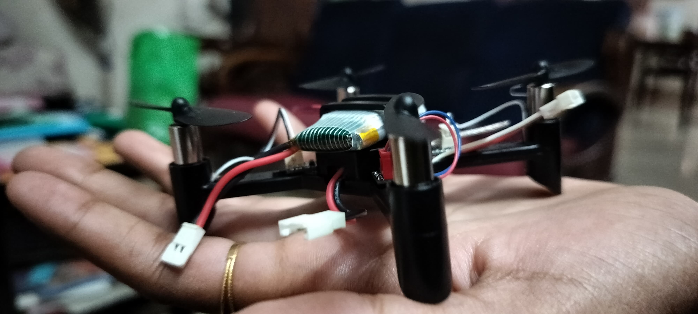

Developed an AI-Driven Smart Agriculture Drone designed to capture real-time crop images using a Raspberry Pi and webcam. Integrated Planty AI, leveraging Generative AI to analyze images for plant health, detect diseases, and provide actionable feedback for improving crop productivity. The drone promotes precision agriculture by automating the process of monitoring large fields, offering farmers insights on irrigation, pest control, and nutrient management. This innovative project combines AI, IoT, and drones to address challenges in modern farming, emphasizing sustainability and efficiency. It demonstrates the transformative potential of AI in revolutionizing agricultural practices for a smarter and greener future.
